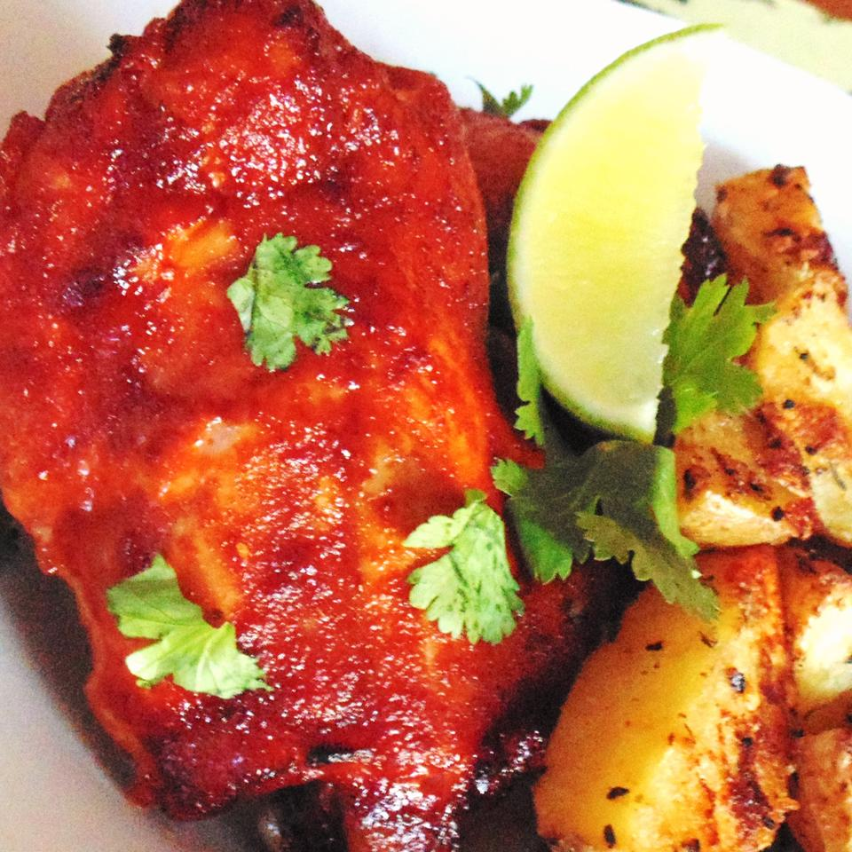

Roasted Chicken

Description
The easy and classic roasted chicken ready to be served!
Ingredients
1 kilogram chicken
1 teaspoon chiili flakes
1/2 teaspoon paprika
1 teaspoon lime zest
2 teaspoon canola oil/rapeseed oil
2 pinches powdered black pepper
4 cloves crushed garlic
1 teaspoon oregano
60 ml red wine vinegar
sea salt as required
2 handful chopped coriander leaves
Steps
Wash the chicken pieces and scoop out the stomach.Then wash it in the running water and drain out the excess water.
In the meantime, preheat the oven at 200 degree C.
Then, take a small bowl and make the chicken marinade by using chilli, garlic, paprika, oregano, lemon zest, vinegar, oil, salt and pepper.
Mix well to combine.
You can add some spices and herbs as per your taste preference.
Bake the chicken for 45 minutes in the oven.
Remove the chicken from the oven and let it cool.After decorate it with coriander.